10. La Katame-waza dei programmi federali
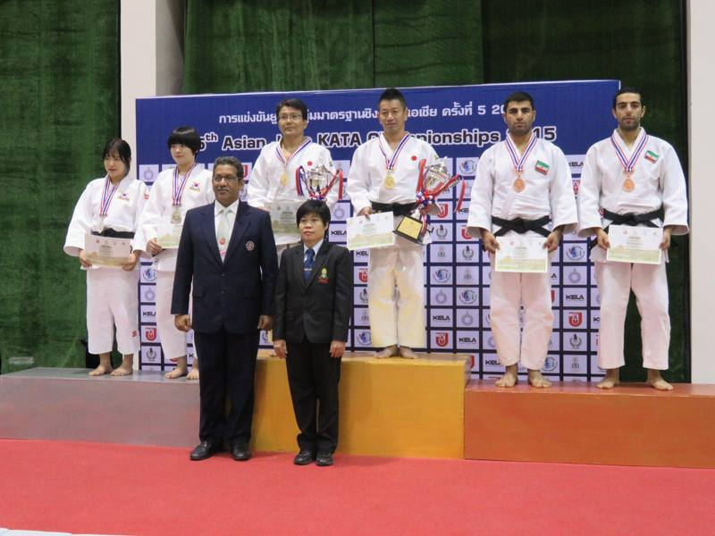
Il Katame-no-kata ai Campionati Asiatici (foto: Sanshiro5304, CC BY-SA 4.0)
La Katame-waza (固技, «tecniche di controllo/solidificazione») è il corpus della lotta al suolo — ne-waza (寝技) — del judo Kodokan, in tre famiglie: immobilizzazioni (Osae-komi-waza 押込技), strangolamenti (Shime-waza 絞技) e leve articolari (Kansetsu-waza 関節技). Il programma FIJLKAM la costruisce per gradi: al 1° dan le quattro osae fondamentali, cinque shime, quattro kansetsu e il 1° gruppo del Katame-no-kata; al 2° dan Ushiro-kesa, Kata-gatame, Makura-kesa, Kata-ha-jime, Ryō-te-jime, Hara-gatame, Hiza-gatame, il Katame-no-kata completo e — secondo la revisione — il gruppo Sankaku e l'Hairi-kata (入り方, «modo di entrare»); al 3° dan Sankaku omote/ura/yoko, Tsukkomi-jime, Sankaku-gatame e le forme Kuzure di tutte le osae-waza.
Al 4° dan il programma federale esige i programmi precedenti «completati da Hairi-kata, Renraku-waza e Kaeshi-waza»: la commissione non valuta la forma statica, ma come si entra (hairi-kata), come si concatena (renraku 連絡) e come si rovescia (kaeshi 返し). Il suolo è il banco di prova della maturità del candidato.
Due premesse. (1) Le shime-waza agiscono correttamente comprimendo le carotidi e le giugulari, riducendo il flusso ossigenato al cervello (strangolamento «di sangue», rapido e indolore): la compressione della trachea è meccanismo secondario, lento e rischioso. (2) In gara (IJF) le kansetsu-waza sono ammesse solo sul gomito; Do-jime e Ashi-garami sono vietati; la resa si segnala battendo più volte con mano o piede.
10.1 Le immobilizzazioni: Osae-komi-waza
Le Osae-komi-waza tengono la schiena — o entrambe le scapole — di uke al tatami col proprio peso. Il controllo è tridimensionale: testa/spalle, busto, bacino; trascurarne uno apre la via di fuga.
Kesa-gatame 袈裟固 — «immobilizzazione a stola»
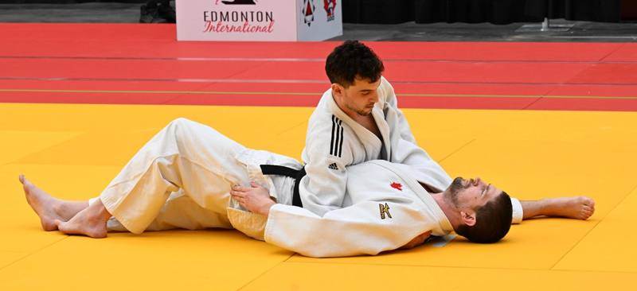
Kesa-gatame nel Katame-no-kata (foto: EIJC 2024, pubblico dominio)
Nome e principio. Dal kesa, la stola dei monaci buddhisti a bandoliera: il busto di tori avvolge il torace di uke allo stesso modo. Controllo laterale: petto su petto, un braccio cinge testa e collo, l'altro blocca il braccio vicino; la base larga delle gambe rende vano il ribaltamento.
Esecuzione: 1. Tori al fianco destro di uke supino; braccio destro attorno a collo/testa, presa al bavero dietro la spalla. 2. Braccio sinistro che blocca il braccio vicino di uke sopra il gomito, contro il proprio petto. 3. Fianco destro a terra aderente alle costole di uke; gamba destra distesa in avanti lungo la colonna di uke, sinistra piegata a «cavalletto». 4. Peso sul torace di uke, testa bassa come contrappeso.
Hairi-kata: seguito di proiezioni di fianco (il braccio alla schiena è già in posizione kesa); caduta accompagnata dopo falciata; rovesciamento (mawari) di uke carponi.
Continuità tachi→ne: O-goshi/Uki-goshi → Kesa-gatame; Harai-goshi-makikomi → Kesa.
Difese e uscite: ponte con aggancio della gamba distesa e ribaltamento verso tori; ebi (海老, gomitata di scampo) a recuperare la guardia; sottrazione della testa con underhook e roll-through.
Errori comuni: base stretta e sedere per terra; ginocchio sollevato (viene agganciato); spazio tra fianco e costole; braccio vicino perso; testa sollevata.
Yoko-shiho-gatame 横四方固 — «laterale dei quattro angoli»
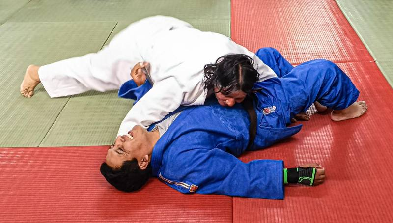
Yoko-shiho-gatame in allenamento (foto: Norkiña, CC BY-SA 4.0)
Nome e principio. Tori trasversale sul busto di uke chiude i «quattro angoli» (shiho 四方): due spalle e due fianchi. La più «chiusa» delle immobilizzazioni: un braccio sotto la testa, l'altro tra le gambe alla cintura, petto aderente al petto, anche bassissime.
Esecuzione: 1. Ginocchia accosto a spalla e anca di uke; braccio sinistro sotto la nuca al bavero destro. 2. Braccio destro tra le gambe di uke alla cintura. 3. Petto su petto, mento a terra oltre la spalla; gambe larghe e distese, avampiedi sul tatami. 4. Gomiti chiusi contro uke.
Hairi-kata: passaggio laterale di guardia; rovesciamento di uke carponi con giro del braccio; caduta laterale accompagnata.
Continuità tachi→ne: O-soto-gari → Yoko-shiho (renraku classico); Tai-otoshi → Yoko-shiho; rotazione a Kami-shiho o salita a Tate-shiho.
Difese e uscite: gomito-ginocchio (recupero guardia); ponte e giro verso tori con sottrazione dell'anca; spinta su collo/fianco ed ebi.
Errori comuni: braccio tra le gambe superficiale; peso sulle ginocchia anziché sul petto; testa sollevata; gomiti aperti.
Kami-shiho-gatame 上四方固 — «superiore dei quattro angoli»
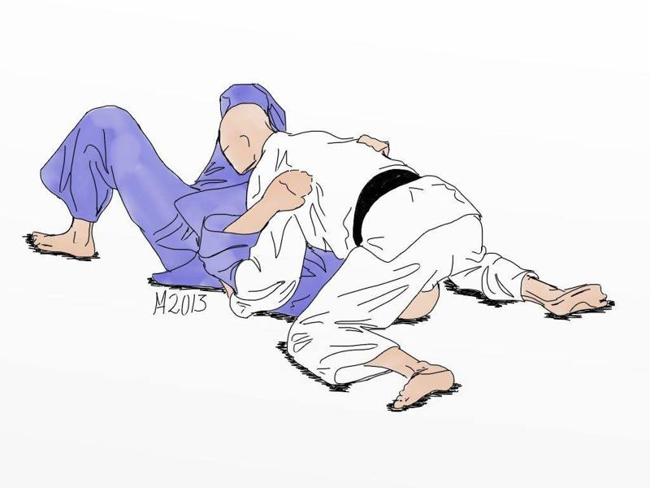
Kami-shiho-gatame (illustrazione: M. Hultström, CC BY-SA 2.0)
Nome e principio. Tori oltre la testa di uke (kami 上, «sopra»), sterno contro sterno in direzione opposta, entrambe le braccia sotto le spalle fino alla cintura: blocca le spalle e schiaccia dall'alto; l'addome copre il volto di uke. È la risposta a chi difende le prese laterali con un ponte potente.
Esecuzione: 1. Tori oltre la testa di uke, rivolto ai suoi piedi; braccia sotto le spalle di uke, mani alla cintura. 2. Sterno su sterno, addome sul volto. 3. Gambe larghe e distese, avampiedi sul tatami; gomiti chiusi ai fianchi di uke.
Hairi-kata: rotazione da yoko-shiho verso la testa; nord-sud dopo passaggio di guardia; caduta oltre la testa dopo proiezione in carico.
Continuità tachi→ne: Ippon-seoi-nage → Kami-shiho (classico); sul braccio che spinge: Juji-gatame.
Difese e uscite: ponte laterale verso un fianco di tori; giro prono con trazione delle anche; spinta sulle anche ed ebi.
Errori comuni: braccia non alla cintura (uke libera il bacino pontando); busto eretto; gambe strette e ginocchia alte.
Tate-shiho-gatame 縦四方固 — «longitudinale dei quattro angoli»
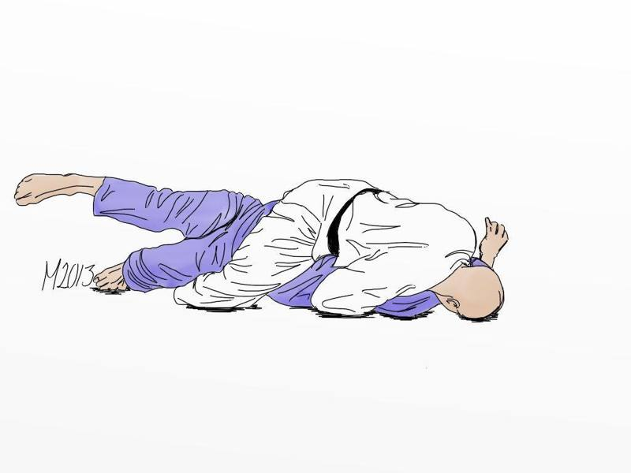
Tate-shiho-gatame (illustrazione: M. Hultström, CC BY-SA 2.0)
Nome e principio. La posizione montata: tori a cavalcioni sul busto di uke (tate 縦, «longitudinale»), sdraiato in avanti petto su petto, controllo di testa e braccia, ginocchia strette ai fianchi. Per il Kodokan ogni forma montata è tate-shiho-gatame.
Esecuzione: 1. Tori monta sul torace di uke, ginocchia ai fianchi; si sdraia in avanti: un braccio sotto la testa, l'altro su braccio o cintura. 2. Petto preme petto, gambe distese o ginocchia alte alle spalle; testa bassa, anche basse, gomiti chiusi.
Hairi-kata: salita in monta da yoko-shiho; monta su uke che si gira prono; accompagnamento della falciata interna con monta diretta.
Continuità tachi→ne: O-uchi-gari → Tate-shiho; Tate-shiho → Nami/Gyaku/Kata-juji-jime; → Juji-gatame sul braccio teso che spinge.
Difese e uscite: ponte e roll (upa) intrappolando braccio e gamba di tori dallo stesso lato; gomito-ginocchio a mezza guardia; rotazione prona con uscita di schiena (attenzione allo strangolamento da dietro).
Errori comuni: restare seduti eretti (si viene rovesciati); ginocchia non strette; testa non controllata; dimenticare che agganciare una gamba di uke sospende il conteggio osaekomi (§10.4).
Ushiro-kesa-gatame 後袈裟固 — «kesa posteriore»
Nome e principio. Variante di kesa con tori rivolto verso le gambe di uke (ushiro 後, «dietro»): un braccio blocca il braccio di uke nel cavo del proprio gomito, l'altro cinge la vita alla cintura. Controlla chi si gira verso tori per uscire da hon-kesa. Ufficiale Kodokan dal 2017; prima era Kuzure-kesa-gatame. Se tori dà completamente la schiena a uke non è osaekomi.
Esecuzione: 1. Dal fianco di uke, tori ruota il busto verso le sue gambe. 2. Il braccio vicino intrappola il braccio di uke nel cavo gomito; l'altro afferra la cintura dietro la schiena. 3. Gambe larghe, peso su fianco e diaframma di uke.
Hairi-kata: transizione da hon-kesa quando uke si gira dentro; caduta oltre la testa di uke dopo proiezione.
Continuità tachi→ne: O-goshi/O-soto-gari con tori che scivola oltre la testa; renraku al suolo Kesa → Ushiro-kesa.
Difese e uscite: ponte e rotazione prona; liberazione del braccio e spinta sul busto di tori; ebi verso le gambe.
Errori comuni: dare la schiena a uke; braccio non bloccato; base stretta.
Kata-gatame 肩固 — «immobilizzazione di spalla»
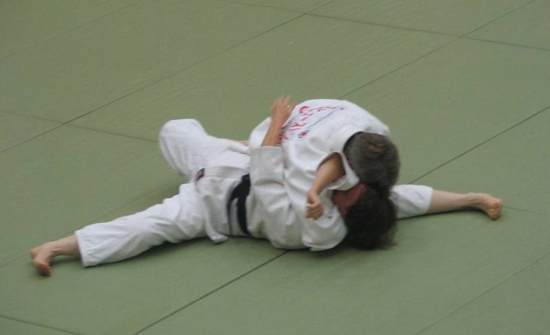
Kata-gatame nel Katame-no-kata (foto: Gotcha2, CC BY-SA 3.0)
Nome e principio. Tori blocca insieme un braccio e il collo di uke (kata 肩, «spalla»): il proprio braccio cinge il collo mentre il braccio vicino di uke è premuto contro il suo stesso volto; le mani unite creano una tenaglia che, se stretta, è di fatto anche uno strangolamento (head-and-arm).
Esecuzione: 1. Da kesa, il braccio destro passa attorno al collo di uke; il braccio destro di uke è premuto sul suo volto. 2. Le mani si uniscono (a S o sul proprio bicipite). 3. Fronte a terra, ginocchio destro al corpo di uke, gamba sinistra distesa; gomiti e peso stringono la tenaglia.
Hairi-kata: da kesa-gatame (transizione del Katame-no-kata); da yoko-shiho sul braccio che spinge; caduta da proiezione «testa-e-braccio».
Continuità tachi→ne: O-goshi/Harai-goshi con presa testa-e-braccio → Kata-gatame; Kesa → Kata-gatame.
Difese e uscite: liberare il braccio prima dell'unione delle mani; ponte verso tori e rotazione di fianco; spinta sul gomito e sottrazione della testa.
Errori comuni: mani non unite; braccio di uke non premuto sul volto; fronte sollevata; ginocchio lontano dall'anca.
Makura-kesa-gatame 枕袈裟固 — «kesa a cuscino»
Nome e principio. La coscia di tori fa da cuscino (makura 枕) sotto la testa di uke: tori siede pesante al fianco con la testa di uke sulla propria gamba e controlla il busto con un braccio attorno alla vita. Il Kodokan la riconduce a Kuzure-kesa-gatame; FIJLKAM ne mantiene la dicitura.
Esecuzione: 1. Dalla posizione laterale, sollevare la testa di uke e inserire la coscia in profondità sotto la nuca. 2. Sedersi pesante; braccio attorno a vita e fianco di uke. 3. Gambe a base larga, peso sul fianco e non sulle ginocchia.
Hairi-kata: da hon-kesa quando uke libera la testa; proiezione con arrivo seduto accanto alla testa; rovesciamento di uke carponi.
Continuità tachi→ne: O-goshi, Harai-goshi con caduta accompagnata → Makura-kesa.
Difese e uscite: estrazione della testa ruotando verso tori; ponte laterale; aggancio della gamba-cuscino.
Errori comuni: coscia non profonda sotto la nuca; peso sulle ginocchia; braccio vicino libero.
10.2 Gli strangolamenti: Shime-waza
Le Shime-waza agiscono sul collo con mani, braccia, gambe o col bavero del judogi; il meccanismo efficace è la compressione bilaterale delle carotidi. Le tre juji-jime (十字絞, «crociate»: 十 è il kanji del dieci, che figura la croce) si distinguono solo per il modo di afferrare il bavero.
Kata-juji-jime 片十字絞 — «mezzo incrociato»
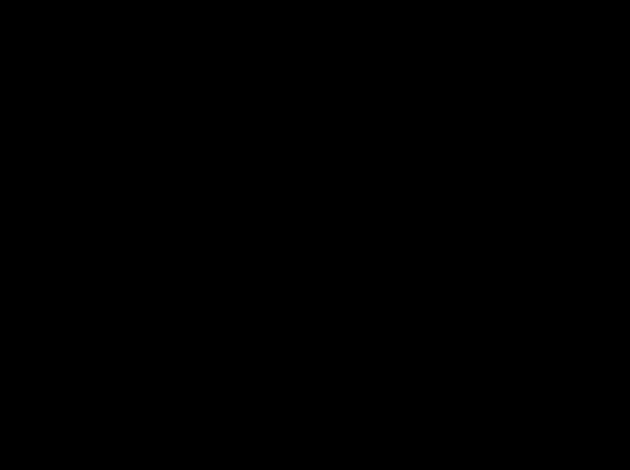
Kata-juji-jime (illustrazione: Judcosta, CC BY-SA 4.0)
Nome e principio. Una mano in presa normale (pollice dentro), l'altra inversa (dita dentro) (kata 片, «metà»): basta una mano a premere una carotide, mentre l'altra contro-tira. Prima shime-waza del Katame-no-kata.
Esecuzione: 1. Mano sinistra al bavero sinistro di uke (dita dentro), destra al bavero destro (pollice dentro), braccia incrociate. 2. Trazione di uke verso di sé e stretta combinata; se uke spinge i gomiti in alto, fletterli e schiacciare il busto su uke (risposta del kata). 3. Da sopra, controllare le gambe di uke.
Hairi-kata: da tate-shiho; da nord-sud; da sotto in guardia; con presa alla nuca.
Continuità tachi→ne: Seoi-nage con uke che non rotola → Kata-juji da sopra; Kami-shiho → Kata-juji.
Difese e uscite: spinta in alto dei gomiti; liberazione del bavero e rotazione; mento affondato nel colletto.
Errori comuni: mani invertite; uke non tirato contro di sé; gambe di uke libere.
Nami-juji-jime 並十字絞 — «incrociato normale»
Nome e principio. Entrambe le mani nel bavero con pollici dentro, palmi in giù (nami 並, «ordinario»): gli avambracci incrociati premono i bordi dei polsi sulle due carotidi. Lo strangolamento «di sangue» per eccellenza.
Esecuzione: 1. Prima mano profonda nel bavero opposto, pollice dentro; seconda mano incrocia sopra all'altro bavero, pollice dentro. 2. Gomiti verso di sé e braccia a forbice, polsi sul collo. 3. Da sopra petto basso su uke; da sotto trazione con le gambe.
Hairi-kata: da tate-shiho; da guardia chiusa su uke carponi; transizione dopo proiezione subita male da uke.
Continuità tachi→ne: Tai-otoshi → Nami-juji-jime; Tate-shiho → Nami-juji.
Difese e uscite: spinta dei gomiti prima della chiusura; «due contro uno» su un polso e giro prono; mento basso e mani al colletto.
Errori comuni: prese superficiali (solo stoffa); incrocio senza trazione; gomiti larghi.
Gyaku-juji-jime 逆十字絞 — «incrociato inverso»
Nome e principio. Come nami-juji ma con palmi in su, quattro dita dentro (gyaku 逆, «inverso»): il dorso di mani e polsi preme le carotidi dal basso. Potente da sotto (guardia) quanto da sopra.
Esecuzione: 1. Mano destra al bavero destro di uke, dita dentro, profonda fino alla nuca; mano sinistra incrocia sopra al bavero sinistro allo stesso modo. 2. Gomiti al corpo e rotazione dei polsi, bordi sul collo. 3. Accompagnare col busto (sopra) o tirando con le ginocchia (sotto).
Hairi-kata: da guardia chiusa; da tate-shiho; da dietro su uke carponi.
Continuità tachi→ne: Tomoe-nage (tori sotto) → Gyaku-juji; variante da tate-shiho se uke difende le prese «nami».
Difese e uscite: liberare una presa a due mani; spinta dei gomiti; giro prono; mento nel colletto.
Errori comuni: dita non profonde; avambracci non incrociati (nessuna forbice); forza prima delle prese.
Hadaka-jime 裸絞 — «strangolamento nudo»
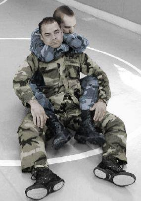
Hadaka-jime, lo strangolamento “a nudo” (foto: U.S. Army, pubblico dominio)
Nome e principio. Si strangola senza il judogi (hadaka 裸, «nudo»): il braccio cinge il collo di uke da dietro, bicipite e avambraccio sulle carotidi. Tecnica istantanea ogni volta che l'avversario espone la schiena.
Esecuzione: 1. Tori dietro uke (seduto/carponi), busto controllato con ganci o ginocchia; braccio destro attorno alla gola, gomito sotto il mento. 2. Mano destra al bicipite sinistro; mano sinistra dietro la nuca di uke. 3. Mani unite tirate al petto, uke aderente a tori; guancia contro la testa di uke, leggera estensione e chiusura.
Hairi-kata: uke carponi (turtle) che abbassa la vita; presa di schiena dopo uscita da immobilizzazione; dopo leva mancata con uke che si gira prono.
Continuità tachi→ne: uscita prona di uke da kesa → presa schiena → Hadaka-jime; Okuri-eri mancato ⇄ Hadaka-jime.
Difese e uscite: afferrare il braccio che cinge a due mani prima della chiusura; mento nel cavo del gomito; rotazione verso il braccio strangolante.
Errori comuni: avambraccio sulla trachea anziché sotto il mento; uke non aderente al petto; testa di tori scoperta; busto non controllato con le gambe.
Okuri-eri-jime 送襟絞 — «a bavero scorrevole»
Nome e principio. Da dietro, una mano scorre (okuri 送, «far scorrere») attorno al collo al bavero opposto in profondità (pollice dentro); l'altra tira il bavero omolaterale sotto l'ascella: la stoffa tesa preme collo e carotidi. Tra gli strangolamenti più forti e difficili da cui uscire.
Esecuzione: 1. Tori dietro uke; la mano sotto l'ascella afferra e allenta il bavero destro di uke. 2. L'altro braccio scorre attorno al collo al bavero opposto, in profondità. 3. La prima mano tira il bavero in basso e di lato tendendo la stoffa; il braccio al collo tira trasversalmente mentre tori inspira e inarca la schiena di uke; guancia alla testa di uke, ganci sul busto.
Hairi-kata: da dietro su uke carponi; dopo rovesciamento fallito con uke prono; presa di schiena da tate-shiho rovesciato.
Continuità tachi→ne: proiezione con uke che finisce prono → Okuri-eri; Okuri-eri → Kata-ha-jime (renraku classico).
Difese e uscite: due mani sul polso che cinge, tirato in giù; mento nel colletto; rotazione verso il braccio strangolante.
Errori comuni: presa troppo alta e stretta (non scorre); stoffa non allentata; trazione in giù anziché trasversale; busto non controllato.
Kata-ha-jime 片羽絞 — «ad ala singola»
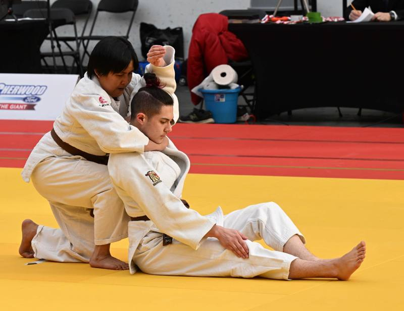
Kata-ha-jime nel Katame-no-kata (foto: EIJC 2024, pubblico dominio)
Nome e principio. Da dietro, una mano al bavero davanti al collo (come okuri-eri) e l'altra sotto il braccio di uke fin dietro la sua nuca (kata-ha 片羽, «un'ala sola»): si strangola col bavero e si immobilizza un braccio («ala») di uke. Il braccio dietro la nuca lavora «a cavatappi», senza spingere il collo in avanti; punto chiave: raddrizzare la schiena di uke.
Esecuzione: 1. Mano destra al bavero destro/nuca davanti alla spalla; mano sinistra sotto l'ascella sinistra di uke, poi dietro la sua nuca con rotazione dell'avambraccio. 2. Trazione della presa al bavero e pressione dell'avambraccio sulla nuca. 3. Ginocchio e gambe raddrizzano la schiena di uke; stringere.
Hairi-kata: da okuri-eri quando uke difende la seconda presa (si cattura il braccio difendente); diretto da dietro su uke carponi; da presa di schiena in piedi.
Continuità tachi→ne: Okuri-eri → Kata-ha (renraku d'elezione in gara); Hadaka con braccio catturato → Kata-ha.
Difese e uscite: gomiti stretti per non farsi catturare il braccio; liberazione del bavero prima della chiusura; rotazione verso tori.
Errori comuni: spingere il collo in avanti con la mano dietro la nuca (inefficace e pericoloso); schiena di uke non raddrizzata; braccio sotto-ascellare non profondo.
Ryō-te-jime 両手絞 — «a due mani»
Nome e principio. Di fronte a uke, entrambe le mani ai baveri incrociati con entrambi i pollici dentro (ryō-te 両手, «due mani»): si premono i tagli dei pugni sui due lati del collo. Non è una juji: le braccia non formano la X. La variante storica di Mifune aggiunge una forbice di gambe al tronco: conta il concetto (bloccare il flusso) più che la forma.
Esecuzione: 1. Mano sinistra al bavero destro e destra al sinistro di uke, pollici dentro. 2. Rotazione dei pugni: i bordi premono i lati del collo. 3. Gomiti in giù e peso del busto che accompagna.
Hairi-kata: da tate-shiho; da guardia; uke carponi di fronte.
Continuità tachi→ne: Tai-otoshi → Ryō-te; Tate-shiho → Ryō-te se uke difende le juji.
Difese e uscite: due contro uno sul polso e rotazione; spinta sui gomiti; giro prono.
Errori comuni: pugni non ruotati; prese superficiali; peso del busto non impiegato.
Sankaku-jime 三角絞 — «strangolamento triangolare»
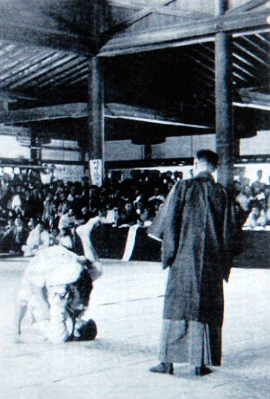
Sankaku-jime in una foto d’epoca del kōsen judo (pubblico dominio)
Nome e principio. Le gambe formano un triangolo (sankaku 三角) attorno a collo e braccio di uke: una gamba sopra la spalla, l'altra sotto l'ascella opposta, piede agganciato dietro il proprio ginocchio; il collo è compresso tra la coscia di tori e il braccio-spalla di uke stesso.
Esecuzione: 1. In guardia, controllo di un braccio di uke; spinta del braccio destro di uke oltre e gamba destra sopra la sua spalla sinistra. 2. Gamba sinistra sotto l'ascella destra; piede destro agganciato sotto il proprio ginocchio sinistro: triangolo chiuso. 3. Testa di uke tirata in giù, anche sollevate, cosce che stringono; angolazione del busto per serrare la forbice.
Hairi-kata: da guardia contro uke carponi; in rovesciamento (hikikomi 引込) afferrando braccio e testa; sankaku rovescio da kuzure-kesa; da juji-gatame mancato.
Continuità tachi→ne: Tomoe-nage (gambe alte da sotto) → Sankaku-jime; Juji-gatame ⇄ Sankaku-jime.
Difese e uscite: postura eretta, braccio non infilato nel triangolo; impilare tori alzandosi; liberare il braccio prima della chiusura.
Errori comuni: triangolo non chiuso; testa non tirata in giù; schiena piatta senza angolazione; braccio nel triangolo non controllato.
Tsukkomi-jime 突込絞 — «strangolamento ad affondo»
Nome e principio. Strangolamento frontale diretto: baveri incrociati, un pugno preme/spinge (tsukkomi 突込, «affondo») la parte anteriore del collo mentre l'altra mano tira il bavero opposto in contro-pressione. Agisce su trachea e carotidi: va dosato con particolare moderazione.
Esecuzione: 1. Mani incrociate ai baveri (destra a destra, sinistra a sinistra) e risalita a stoffa tesa. 2. Una mano ruota a pugno e preme sul collo; l'altra tira il bavero di lato in contro-pressione. 3. Il busto accompagna la spinta.
Hairi-kata: da tate-shiho; da guardia chiusa; uke carponi di fronte.
Continuità tachi→ne: Tai-otoshi → Tsukkomi; Tate-shiho → Tsukkomi.
Difese e uscite: due contro uno sul polso che preme; mento basso a proteggere la gola; spinta dei gomiti e rotazione prona.
Errori comuni: pressione di solo braccio senza contro-trazione; presa lasca (il pugno scivola); busto non controllato.
10.3 Le leve articolari: Kansetsu-waza
Le Kansetsu-waza agiscono — in gara solo sul gomito — con due meccanismi: la leva (iper-estensione, fulcro su coscia, addome, ascella o avambraccio) e il nodo/ritorta (torsione del braccio piegato ad angolo retto). Pressione sempre progressiva; la resa va rispettata all'istante.
Ude-garami 腕緘 — «braccio attorcigliato»
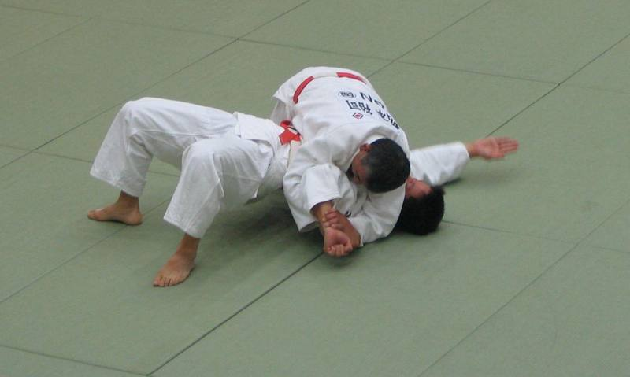
Ude-garami nel Katame-no-kata (foto: Gotcha2, pubblico dominio)
Nome e principio. Leva in torsione, non estensione (garami 緘, «legare/avvolgere»): il braccio di uke piegato a 90° è ruotato oltre il fisiologico contro gomito e spalla, con presa «a figura-quattro» (una mano sul polso di uke, l'altro avambraccio sotto il suo braccio sul proprio polso).
Esecuzione (da kesa, braccio vicino): 1. Uke spinge via il busto di tori col braccio intrappolato; la mano sinistra afferra il polso di uke. 2. Il braccio destro passa sotto il braccio piegato e chiude la figura-quattro. 3. Il polso di uke scende verso il tatami «dipingendo il pavimento» col dorso della sua mano; il peso resta sul busto.
Hairi-kata: da kesa-gatame (canonica del Katame-no-kata); da yoko-shiho e tate-shiho sul braccio che spinge.
Continuità tachi→ne: O-goshi → Kesa → Ude-garami; Tate-shiho → Ude-garami.
Difese e uscite: stendere il braccio verso la propria gamba (toglie l'angolo); afferrare il proprio bavero o la cintura e pontare; rotazione verso tori.
Errori comuni: gomito di uke non fissato; peso sollevato dal busto; figura-quattro chiusa lontano dal corpo.
Ude-hishigi-juji-gatame 腕挫十字固 — «leva incrociata del braccio»
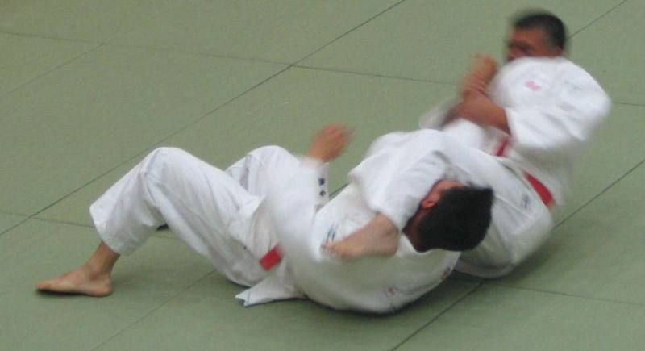
Ude-hishigi-juji-gatame nel Katame-no-kata (foto: Gotcha2, pubblico dominio)
Nome e principio. La leva per eccellenza (juji 十字: il corpo di tori incrocia il braccio di uke): il braccio teso è bloccato tra le cosce, il bacino di tori è il fulcro sotto il gomito, pollice di uke verso l'alto; sollevando i fianchi si iper-estende il gomito. Se la proiezione non ha dato ippon, il seguito in juji assicura il successo.
Esecuzione (da uke carponi): 1. Di fianco a uke, presa del braccio destro (polso a due mani o polso e manica); gamba destra sopra collo e testa, sinistra sotto l'ascella. 2. Sedersi vicinissimo alla spalla, gomito di uke sul proprio addome. 3. Sdraiarsi all'indietro tirando il braccio, ginocchia strette sulla spalla, pollice su. 4. Sollevare lentamente il bacino: resa immediata.
Hairi-kata: uke che si gira prono sotto attacco al braccio; seguito di rovesciamento con conservazione del braccio; rovesciamento di uke carponi; braccio teso che spinge da tate-shiho o kami-shiho.
Continuità tachi→ne: Tomoe-nage → Juji-gatame (la continuità didattica per eccellenza); Tai-otoshi/Seoi-nage → Juji; Juji ⇄ Sankaku-jime; juji impedito → Sankaku-gatame.
Difese e uscite: mani bloccate (a S, figura-quattro, unite) e arrotolamento con pollice verso l'alto; impilare tori sollevandogli il bacino; gomito in giù prima che tori si sdrai.
Errori comuni: sedersi lontano dalla spalla; gambe larghe non stringenti; pollice di uke non verso l'alto; bacino alzato di scatto (pericolo lussazione: nel kata la pressione è progressiva).
Ude-gatame 腕固 — «leva con le braccia»
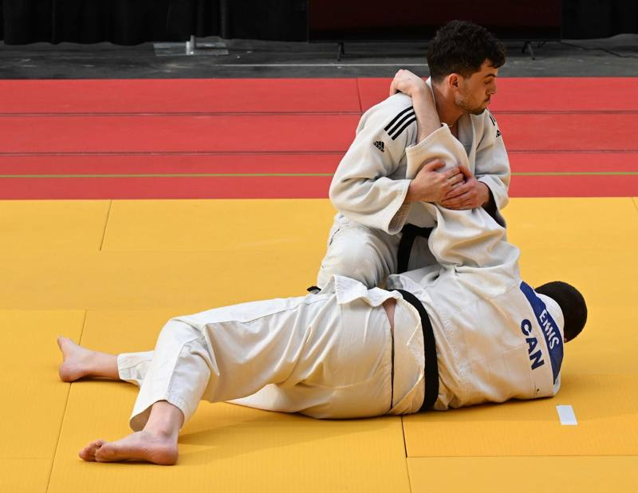
Ude-hishigi-ude-gatame nel Katame-no-kata (foto: EIJC 2024, pubblico dominio)
Nome e principio. Abbreviazione di Ude-hishigi-ude-gatame 腕挫腕固: iper-estensione del gomito usando il proprio braccio/avambraccio come fulcro (non gambe né ascella); il braccio teso di uke è bloccato contro il petto di tori.
Esecuzione: 1. Uke carponi o supino, polso afferrato a due mani. 2. Il proprio avambraccio/gomito contro il gomito di uke come fulcro. 3. Trazione del polso e pressione del gomito sul fulcro col peso del busto, corpo perpendicolare al braccio di uke.
Hairi-kata: braccio teso di uke carponi che si difende; da yoko-shiho sul braccio lontano; contro la spinta a braccio teso.
Continuità tachi→ne: O-soto-gari → Yoko-shiho → Ude-gatame.
Difese e uscite: piegare il braccio con palmo in su; rotazione verso tori ad allineare il gomito; presa al proprio bavero.
Errori comuni: fulcro fuori asse (su bicipite o avambraccio); polso non bloccato al petto; spazio alla rotazione di uke.
Waki-gatame 腋固 — «leva ascellare»
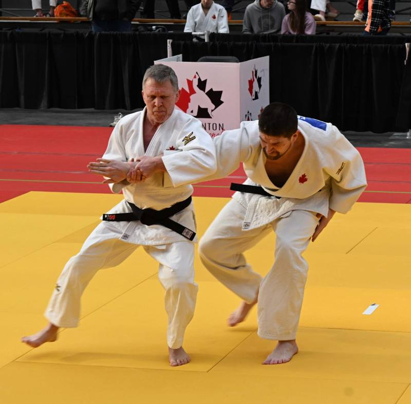
Waki-gatame (foto: EIJC 2024, pubblico dominio)
Nome e principio. Forma completa Ude-hishigi-waki-gatame 腕挫腋固: il braccio teso di uke è bloccato sotto l'ascella di tori (waki 腋), polso tenuto a due mani, e l'ascella-fianco fa da fulcro contro il gomito. Applicabile anche in piedi; in gara è vietato lasciarsi cadere direttamente a faccia in giù applicandola: la discesa dev'essere controllata.
Esecuzione: 1. Al fianco di uke, presa del suo polso destro a due mani. 2. Braccio di uke infilato sotto la propria ascella sinistra, stretto al fianco. 3. Sollevamento del polso e abbassamento dell'ascella: il gomito si iper-estende; busto perpendicolare, peso sulla spalla di uke.
Hairi-kata: in piedi con discesa controllata (su un ginocchio o in rotolamento); da uke carponi; dal braccio intrappolato in kuzure-kesa.
Continuità tachi→ne: Waki-gatame in piedi → caduta controllata → osaekomi o leva; Kuzure-kesa → Waki-gatame.
Difese e uscite: giro completo del corpo («roll-through») verso tori; presa alla propria gamba o al bavero; flessione del braccio prima della chiusura.
Errori comuni: ascella non chiusa; caduta a faccia in giù (rischio e hansoku-make); spalla di uke non controllata col peso.
Ude-hishigi-hara-gatame 腕挫腹固 — «leva addominale»
Nome e principio. Il fulcro è l'addome di tori (hara 腹, «ventre»): con uke prono, tori pone lo stomaco sul braccio di uke appena sopra il gomito e preme in basso sollevando il polso. Nota da esame: «hanza-hara-gatame» non è un nome ufficiale — hanza è solo la postura a un ginocchio alzato di alcune entrate.
Esecuzione: 1. Uke prono, braccio esteso; tori perpendicolare sopra la sua schiena. 2. Braccio di uke intrappolato tra braccio e busto di tori; addome sul dorso del braccio, appena sopra il gomito. 3. L'altra mano controlla polso e avambraccio; pressione addominale in basso e polso sollevato.
Hairi-kata: uke che si gira prono sotto attacco di leva; da juji in cui uke si appiattisce prono; rovesciamento parziale di uke carponi.
Continuità tachi→ne: Juji con uke prono → Hara-gatame; O-uchi-gari → uke prono → Hara-gatame.
Difese e uscite: rotolare di lato verso tori togliendo il fulcro; piegare il braccio sotto il corpo; sollevarsi carponi scaricando il peso.
Errori comuni: addome sul braccio e non sopra il gomito; polso non bloccato; spazio al rotolamento di uke.
Hiza-gatame 膝固 — «leva col ginocchio»
Nome e principio. Forma completa Ude-hishigi-hiza-gatame 腕挫膝固: il ginocchio di tori (hiza 膝) è fulcro e pistone contro il gomito di uke, il cui polso resta bloccato sotto l'ascella di tori. Quarta kansetsu del Katame-no-kata, eseguita partendo in piedi.
Esecuzione (schema del kata): 1. Da presa in piedi, il braccio sinistro passa sotto il braccio destro di uke, lo raccoglie sotto l'ascella bloccandone il polso, mano a coppa sopra il gomito. 2. Piede sinistro vicino al piede destro di uke, squilibrio verso l'angolo anteriore sinistro; piede destro sulla coscia/bacino di uke. 3. Tori a terra sul fianco destro, ginocchio sinistro sopra il gomito di uke; il ginocchio preme, la mano destra tira, il piede destro allontana la gamba di uke.
Hairi-kata: in piedi con braccio raccolto (kata); al suolo col ginocchio che sostituisce il bacino del juji; da kuzure-kesa sul braccio intrappolato.
Continuità tachi→ne: Kuzure-kesa → Hiza-gatame; Tai-otoshi parato (braccio raccolto) → Hiza-gatame.
Difese e uscite: muoversi verso tori forzando il braccio oltre il ginocchio (l'uscita prevista dal kata); piegare il braccio; rotolare verso il ginocchio.
Errori comuni: ginocchio non sopra il gomito; polso non bloccato sotto l'ascella; gamba di uke non controllata col piede libero.
Sankaku-gatame 三角固 — «leva triangolare»
Nome e principio. Forma completa Ude-hishigi-sankaku-gatame 腕挫三角固: unisce il triangolo di gambe del sankaku-jime alla leva al gomito — le gambe trattengono collo e corpo di uke lasciando uscire solo il braccio, esteso in leva dal ponte del ventre. Tecnica di alto livello.
Esecuzione: 1. Uke carponi, presa di un braccio; forbice rapida con entrambe le gambe: braccio e collo intrappolati. 2. Le gambe trattengono il corpo; tori afferra il polso del braccio intrappolato. 3. Ponte del ventre in fuori: il braccio si estende all'indietro in leva.
Hairi-kata: da juji-gatame impedito (uke blocca le braccia fra loro: tori sfila la gamba vicino alla testa, la piega dietro il blocco e chiude il triangolo); da guardia come per sankaku-jime.
Continuità tachi→ne: Juji-gatame ⇄ Sankaku-gatame; Tomoe-nage → Sankaku → Sankaku-gatame.
Difese e uscite: postura e braccio ritirato prima della chiusura; liberare il polso prima del ponte; impilare tori.
Errori comuni: intrappolare il braccio senza il collo; polso non bloccato prima del ponte; ponte debole senza estensione.
10.4 Le forme Kuzure e il principio del controllo efficace
Kuzure (崩れ) significa «crollato, rotto, modificato». Una hon-waza (本技, «forma regolare») è la versione canonica insegnata nel kata; la forma kuzure è la medesima posizione base mantenuta con un adattamento del controllo — prese, posizione di un braccio o di una gamba — in risposta alla difesa di uke. Due principi:
- La posizione di base si conserva. In Kuzure-kesa-gatame 崩袈裟固 tori resta al fianco di uke rivolto alla testa, gambe come in kesa, ma il braccio lato testa passa sotto l'ascella lontana (underhook) a controllare spalla e bavero, mentre l'altra mano ferma il braccio vicino: è la prima tecnica del Katame-no-kata. In Kuzure-kami-shiho-gatame 崩上四方固 una mano passa sopra il braccio di uke al bavero dietro il collo e l'altra alla cintura: il braccio resta intrappolato e si apre la via a juji-gatame e ude-garami.
- Il controllo si adatta alla reazione. Se uke libera la testa, cerca l'underhook o si gira, tori modifica le leve senza mai perdere la schiena di uke al tatami. Le forme «kuzure» di yoko-shiho e tate-shiho (una gamba che aggancia la gamba di uke, un braccio che controlla diversamente) non ricevono il prefisso ufficiale ma restano kuzure nel linguaggio didattico: è ciò che il programma FIJLKAM intende con «forme di Kuzure relative a tutte le tecniche di Osae-waza».
Punto terminologico per la commissione. Nella terminologia ufficiale Kodokan il prefisso «Kuzure» si applica solo a Kesa-gatame e Kami-shiho-gatame. Makura-kesa e Ushiro-kesa sono state a lungo ricondotte formalmente a Kuzure-kesa-gatame (Ushiro-kesa è divenuta nome ufficiale dal 2017); FIJLKAM mantiene entrambe le diciture e il candidato deve saperne motivare la coesistenza.
La regola della gamba agganciata. Ai fini dell'osaekomi conta il controllo efficace — schiena o entrambe le scapole al tatami, controllo dall'alto, uke impossibilitato a liberarsi — non la fedeltà formale alla presa del kata: per questo le kuzure sono pienamente valide in gara. Con un'eccezione da conoscere a memoria: se tori aggancia con le proprie gambe una gamba di uke (tipico di kuzure-tate-shiho e kuzure-yoko-shiho), il conteggio dell'immobilizzazione si sospende finché l'aggancio permane, pur restando valido il controllo. Agganciare la gamba è quindi strumento di consolidamento, non di punteggio: si aggancia per stabilizzare, si sgancia per far ripartire il cronometro.
In sintesi: la forma hon insegna il principio, la forma kuzure dimostra di averlo compreso. Al 4° dan la commissione non valuta la ripetizione del gesto, ma la capacità di mantenere il controllo efficace attraverso ogni adattamento — entrata (hairi-kata), concatenamento (renraku), rovesciamento (kaeshi): questa è la katame-waza «completata» richiesta dal programma federale.